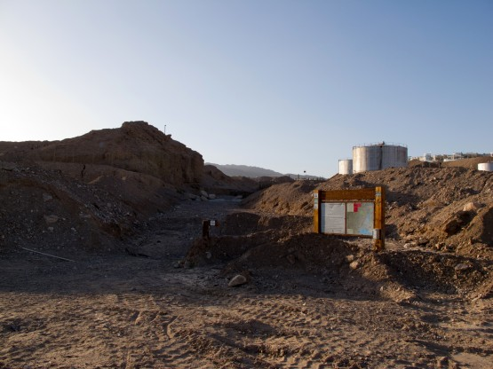
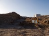
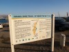
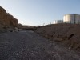
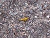
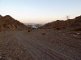
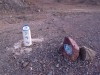

23 марта, пятница, шаббат
Хорошая погода, пыль растянуло, светит солнце. Игорь оказался полностью прав. Первую половину дня купались и ловили интернет из проезжающих зеленых автобусов, вернее из тех которые останавливались на 5-10 минут на кольце перед египетской границей. WiFi в них бесплатный, а так как наша палатка была примерно в 50 метрах от этой остановки, то можно сказать, что нам достался пляж с бесплатным интернетом. Автобусы, правда, периодически отъезжали и приходилось коннектиться к следующему, но это мелкие неприятности.
Андрей развернул солнечную батарею и зарядил свой чудо-телефон, а заодно и мой. На ярком Израильском солнце батарея работала просто отлично.
Ближе к обеду, совершенно не сговариваясь, мы одновременно поняли, что все дела переделаны, купаться больше не хочется, а просто лежать на пляже мы не можем. Надо ехать!
Быстро собрались. Вернулись в центр города, купили еды в небольшом магазине. Скоро шаббат и все закроется.
Уже в вечерних лучах солнца подъехали к началу (или концу?) знаменитого Швиль Исраэля - маршрута длинной в 1000 километров, который идет через всю страну. Вот, только не спрашивайте меня, откуда в Израиле 1000 километров -:) но маршрут действительно такой протяженности.

Начало Швиля
Сказать, что этот участок Швиля нас разочаровал - это ничего не сказать! Просто ужас! Дело в том, что мы уже неоднократно ехали по отдельным эго частям в районе Иерусалимских предгорий и везде это были замечательные грунтовки и тропы, проложенные по очень красивым местам.
В районе Эйлата все не так. Швиль начинается от набережной и идет по сухому и грязному руслу нахля через город. Ехать практически невозможно из-за подвижной гальки, в которую зарывается колесо. Кроме того идет небольшой, но постоянный набор высоты. Возможно, в другую сторону этот участок и проезжаем, но не вверх. В итоге через пару километров решили выехать их русла ручья на параллельные улицы. Сразу стало веселее, но город быстро закончился, а наш путь опять продолжился по руслу широкого ручья. Камни стали мельче, но остались такими же рыхлыми. Андрей на своей резине 2.6 довольно бодро ехал, а я на 2.4 постоянно зарывался. Казалось бы не такая и большая разница, возможно дело в более злом протекторе на его колесах. Не люблю я езду по рыхлому песку особенно в горку, тем более что ничего особо красивого вокруг не наблюдалось. Тем временем солнце село, мы немного свернули с дороги и поставили палатку, благо вода была с собой.
Дневной пробег 16, 1 км, набор высоты 363 метров
     